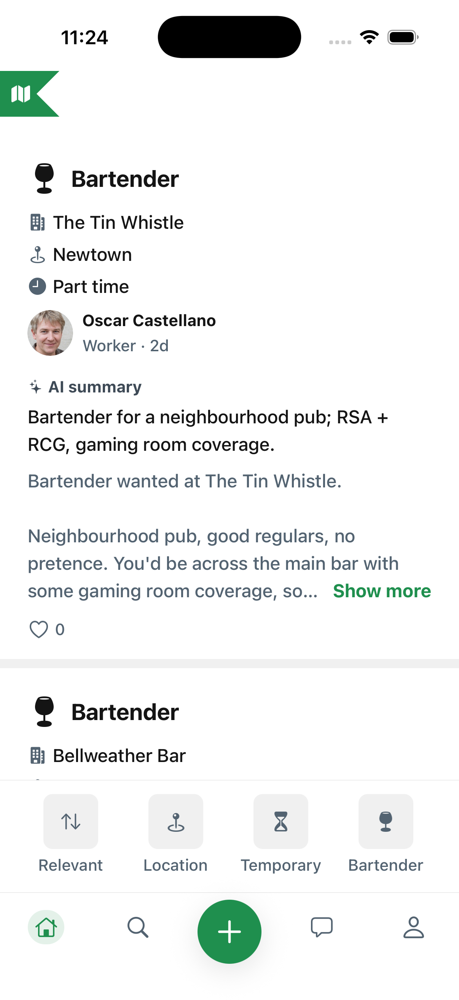
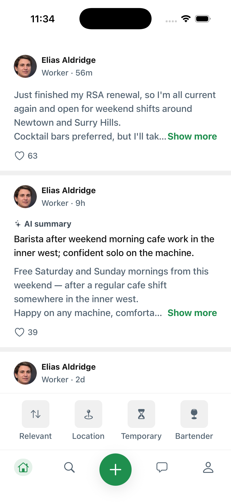

More than a resume
Photos of the work you have actually done, past roles with the venues you did them at, and a one-line headline hirers read next to your name in the applicant list.
Discover new opportunities near you
Cloche puts bars, cafes and restaurants in direct contact with the people who staff them. No recruiter in the middle. Post a shift, find a shift, sorted.


Discover, Apply, Work, streamlined.
Drag, swipe or use the arrows.
Work that works for you
A map of Sydney fills the screen. As the page scrolls, suburb pins land on it one by one — 314 open jobs across 48 suburbs, each pin sized and coloured by how many jobs are open there.
The rest of it
Photos of the work you have actually done, past roles with the venues you did them at, and a one-line headline hirers read next to your name in the applicant list.
Stand out amongst other applicants. Upload your certificates once and we check it. Hirers see a verified tick beside your name in the applicant list.
Set your suburb, then drag a distance in kilometres. Anything past it drops out of the feed and the map, so you only see work you would actually travel to.
Attach the job itself to any message, so a worker you are talking to about three different roles always knows which one you mean. Photos and files go in the same thread.
Hospitality workers advertise that they are after work, and they arrive in your feed by role and suburb. Find someone who fits and message them directly, without posting a shift at all.
Look up a name or a role and get workers back, not just shifts, ranked the same way your feed is. Recent searches and the profiles you opened stay on your phone.